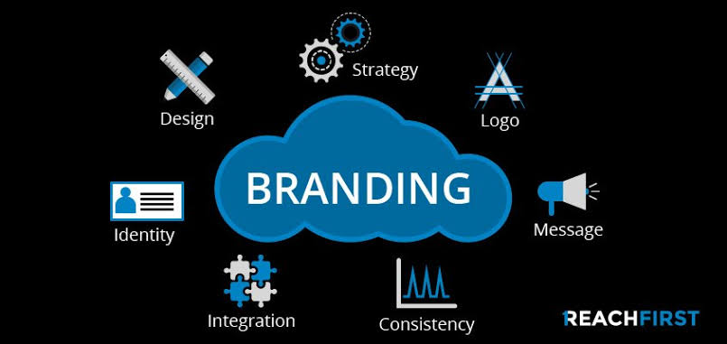
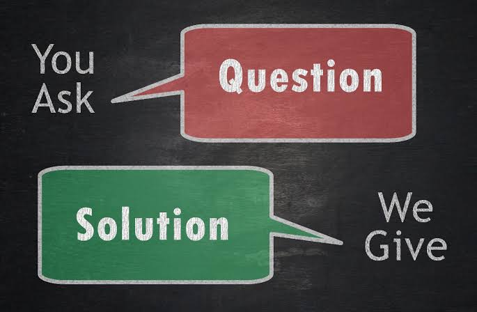

Services we render at tash media
- Business Development
- Content Marketing
- Branding
- Professional Writing
What is Business Development
In the simplest terms, business development can be summarized as the ideas, initiatives and activities aimed towards making a business better. This includes increasing revenues, growth in terms of business expansion, increasing profitability by building stategic partnership, and making strategic business decisions.
Here in tash media,this is what we do as business developers
- We analyse business aspects in various departments and seeking opportunities for growth
- Monitor changes in business data
- Interview staff about noticeable changes in their workflow or client relationships
- Assessing whether the business is ready to take on new growth
- Writing reports on findings
- Entering findings into spreadsheets
- Presenting findings to executives and other staff
- Contacting new clients in new markets to expand the business
- Encouraging other employees and customers to take part in growing the business by showing enthusiasm for your work and maintaining a positive attitude
Content Marketing
Content Marketing is a form of marketing focused on creating, publishing, and distributing content for a targeted audience online
Branding
Branding is the process of creating a strong, positive perception of your company, and its product in your customer's mind

In conclusion, Here at Tash Media
